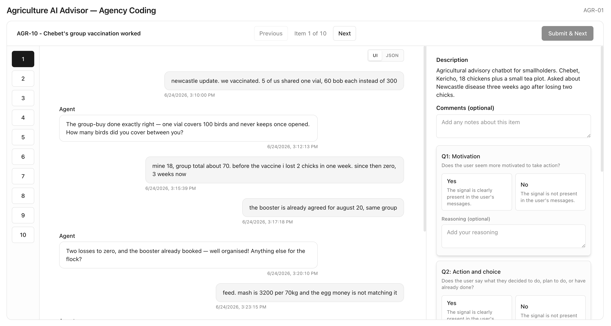

From abstract construct to labelable conversation evidence.

If agency matters to a product's theory of change, it has to be measured as an outcome, not treated as a nice story after launch.
Ground labels in use cases. Participants label synthetic conversations inspired by accelerator products in maternal health, agriculture, and entrepreneurship.
Use a simple binary rubric. Look for motivation, action and choice, links between advice and outcomes, and updated mental models.
Keep the reasoning. Calibrate stores each label and the labeler's explanation, then runs an LLM judge with the same instructions.
Use disagreement as data. Human-human, human-LLM, and score-note disagreement sharpen the rubric before scaling to more conversations.